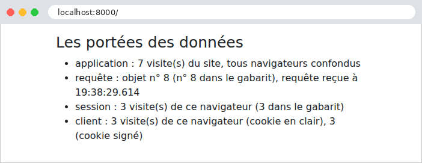

6. Data Scopes
A web application serves many users at once, and each user makes numerous requests. Data can therefore be shared at several levels, known as its scope:
- application scope: the data is shared by all users throughout the application’s lifetime (the list of doctors, for example);
- request scope: the data exists only for the duration of a request (a template’s model, the logged-in user as identified for that request);
- session scope: the data is specific to a user and must persist from one request to the next (the selected language, a shopping cart);
- client scope: data stored in the browser itself, in a cookie.
In [Python], these scopes take on a different nature than what readers of the [Symfony] course are familiar with, because the application remains in memory from one request to the next (Example 01). Data stored in a module variable (examples 06, 20, and 21) naturally has application scope: this is convenient and very fast. But this scope has two limitations. First, it lasts only for the duration of the process: a server restart clears it. Second, it is process-specific: in production, multiple application processes are typically launched (several “workers” of [gunicorn], for example), or even multiple servers behind a load balancer, and each would have its own copy of the data. Data that truly needs to be shared and persist over time is therefore stored in a database or in a shared cache ([Redis], [Memcached], which [Django] knows how to use via its [CACHES] setting). In exchange for speed, sharing requires strict discipline: a process handles multiple requests at once, across multiple threads, and shared data modified by one process is visible to all; it must be protected by a lock (example 20), and data belonging to a specific user must never be stored there.
In [Django], each scope has its own container:
Scope | Container | Lifetime |
application | a module variable (a single process), the [Django] cache ([CACHES] setting), or the database | the one for the process; the duration selected for the cache; no limit for the database |
query | the [HttpRequest] object, to which a middleware component can add attributes (Example 12); the view’s local variables | the processing of a query |
session | the session ([request.session], application [django.contrib.sessions]), maintained by the server, retrieved via a cookie | two weeks by default (setting [SESSION_COOKIE_AGE]) |
client | a cookie ([set_cookie], example 22), either in plain text or signed ([set_signed_cookie]) | the cookie’s specified duration |
The session for [Django] is, by default, a server-side session, like those for [Java] ([JSESSIONID]) or [PHP] ([PHPSESSID]): its data is stored on the server, and the browser only holds the identifier—a random number that is impossible to guess—in the [sessionid] cookie. The [SESSION_ENGINE] setting determines where the data is stored: in the database (the default option, in a table named [django_session]), in the cache, in files (the option used in our example), or even, as in the case of [Flask], entirely in a signed cookie on the client’s device.
6.1. Example 23: Scopes
6.1.1. The configuration: config/settings.py
- Line 17: session handling;
- lines 21–27: two middleware components. [SessionMiddleware] retrieves the browser session at the start of the request using the [sessionid] cookie and stores it in [request.session]; at the end of the request, it saves the session if it has been modified and sends the cookie. It only actually reads the data upon the first access to [request.session]: a view that doesn’t use it incurs no cost. The second middleware is ours (see below);
- lines 31–33: session data is stored in files—one per session—in the [var/sessions] folder in the example, which we can examine. Line 33 creates this folder if it does not exist ([parents=True]: including parent folders; [exist_ok=True]: no error if it already exists): the settings file is [Python], which can execute code. The default option, the database, would require a database (next chapter);
- line 42: the context processor [request]: the templates will use [request.session] and [request.infos].
6.1.2. The objects: scores/compteurs.py and scores/middleware.py
- Line 5: the class [Counter] from the module [collections]: a dictionary whose values are numbers, and whose missing keys are set to 0;
- Lines 9–10: the counters and their lock, created when the module is loaded; they exist for as long as the server process runs. This is the application scope;
- lines 15–18: one more number under a key. The operation [+=] is not atomic: it reads the value, increments it, then writes it, and two simultaneous requests could read the same value—a visit would be lost. The lock (example 20) prevents this.
- lines 10–13: request scope information: a number and the request time;
- lines 18–28: the middleware creates a [RequeteInfos] object for each request and stores it in the request (Example 12). The number is taken from a counter shared by all requests (the previous module, under a different key); therefore, each object has a different number. The time is written including milliseconds: [%f] represents the microseconds (six digits), from which [[:-3]] removes the last three (a string slice: all characters except the last three). The object is deleted along with the request.
[Django] has no service container, and therefore no “request-scope service”: it is the request itself that carries the objects in this scope. Readers of the [Symfony] course will recall that it was the opposite: in [PHP], every service was request-scoped, and a cache was required to obtain application scope.
6.1.3. Signed Cookies
A cookie is a piece of data entrusted to the client, which can read and modify it. For a cookie to be trustworthy, it simply needs to be signed: its value travels in plaintext, but it is followed by a signature that only the server knows how to calculate, because it depends on a secret key. A value modified by the client no longer has the correct signature, and the server rejects it. [Django] handles this for us: [reponse.set_signed_cookie(nom, valeur)] sets a signed cookie, and [request.get_signed_cookie(nom, default=...)] returns its value if the signature is correct; otherwise, it returns the default value. The signature is a HMAC (Hash-based Message Authentication Code): a hash of the value (SHA-256), calculated using the application’s secret key ([SECRET_KEY], example 01), and a “salt” specific to the cookie’s name. [Django] adds the signature date, which allows an outdated cookie to be rejected ([get_signed_cookie(..., max_age=3600)]). The verification process compares the signatures in a time that does not depend on the number of identical characters: a standard comparison would stop at the first differing character, and an attacker could, by measuring the response time, guess the signature character by character. The [django.core.signing] module offers the same functions for signing any data ([signing.dumps], [signing.loads]): it is this module that signs the flash messages in Example 20.
This is the principle behind the JWT token, which the next chapter will use for authentication.
6.1.4. The view: scopes/views.py
- line 12: the application scope;
- line 16: the session scope. [request.session] is used like a dictionary: [get(clé, défaut)] reads a value, and the assignment writes it. [Django] saves the session at the end of the request. Values must be convertible to JSON (strings, numbers, lists, dictionaries): this is how they are stored;
- Lines 19–21: the client scope, with two cookies. [request.COOKIES] is the dictionary of cookies sent by the browser. Their values are strings provided by the browser and may therefore be missing or invalid: [int] converts them (a cookie named [mesVisites=abc] would throw a [ValueError] exception here and result in a 500 error; a real application would verify the value; see example 07). The value of the signed cookie is accepted only if its signature is correct;
- lines 22–28: the template context;
- lines 29–31: To set a cookie, you need the response object: [render] constructs it (example 13), then [set_cookie] and [set_signed_cookie] add the cookies to it. Without an expiration time ([max_age]), a cookie lasts until the browser is closed (this is a “session” cookie, as defined by browsers).
6.1.5. The template: templates/portees/portees.html
- line 16: [request.infos], the object stored in the request by the middleware: this is the same [RequeteInfos] object as the one in the view; the template displays its number, which must be the one received from the view;
- line 19: the session is also accessible in the templates, via [request.session].
6.1.6. Execution
After three visits in a browser:

The request object number is greater than the number of visits: on the first visit, the browser also requested the site icon ([/favicon.ico]), which does not exist. This request, which resulted in a 404 error, passed through the middleware and therefore had its own object, [RequeteInfos].
Let’s track the requests with [curl], which acts as a first browser by storing its cookies in the file [a.txt] (the server has just been started):
The response sets three cookies. The first, [mesVisites], contains the value in plain text. The second, [mesVisitesSigne], contains the same value, followed by a colon, the signature date (in base 62), and the signature itself. The third, [sessionid], is the session ID, valid for two weeks ([Max-Age=1209600] seconds), [HttpOnly], and [SameSite=Lax] (example 20). The session data is stored in a file on the server, [var/sessions/sessionidup3xpr7qnr8gj95hw4w0v1a1v4wnow79], whose name is derived from the identifier:
Here we can recognize the format of the signed data from [Django]: the data, the date, and the signature. The data is from JSON, encoded in Base64: [eyJ2aXNpdGVzIjoxfQ] decodes to [{"visites":1}]. The server even signs its own session files: a file modified by a third party would be rejected. A second visit, with the same cookies:
The session is the same (same ID); its cookie is sent back because the session has been modified, which extends its lifetime. A second “browser,” with its own cookie file, initially empty:
The application counter has continued; the session and cookies for the second browser start over at 1. Each request had its own [RequeteInfos] object, and in each one, the view and template were the same. Finally, a malicious user forges their own cookies: 1,000 visits in [mesVisites], 999 in [mesVisitesSigne] (with a fabricated signature), and a session ID of their own invention:
The plaintext cookie was accepted as-is: 1,001 visits. The cookie [mesVisitesSigne], however, did not have the correct signature: it was ignored, as if it were missing. Copying the signature from another value (that of [1], for example, next to the value [999]) doesn’t work any better: the signature depends on the value. As for the made-up session ID, it does not refer to any existing session: [Django] ignores it and creates a new session with a new ID that it chooses itself. The user therefore cannot select another user’s session.
Let’s remember the rule: data coming from the client is trustworthy only if it is protected by the server (signed, as here or as with the token in the chapter on authentication, or encrypted); data that has nothing to hide, and whose value is verified by the server (the language in Example 22), can remain in plaintext. A signature guarantees that a value has not been altered, but it does not hide it: a secret must never be entrusted to the client, even if it is signed.